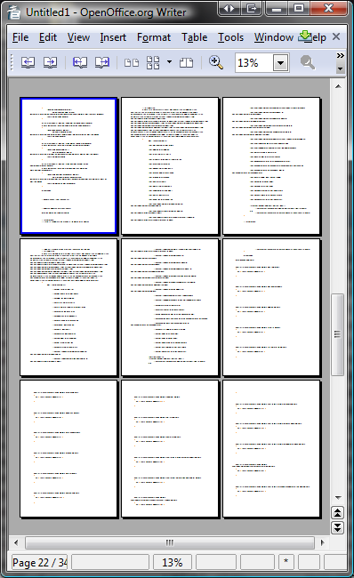

I am much given to ruminating on refactoring at the moment, as one of my current projects is a major overhaul of a fairly large (>31,000 lines) application which has exactly the kind of dotted history any experienced developer has learned to fear - written by many different people, including short-term contractors, at a time in the company's life when first-mover advantage was significantly more important than coding best-practice, and without any consistent steer on the subjects of structure, coding conventions, unit tests, and so on.
In other words, here be dragons.
In fairness, the application works and has been a critical part of a company that has gone from nothing to market-leading multinational in 7 years, so it has certainly pulled its weight. It is in desperate need of a spring-clean though, and my team volunteered to spend 3 months evicting the cobwebs and polishing the brasswork.
Yes, volunteered - it's a fascinating challenge, though perhaps not something you'd want to make a career of.
Now, the first mistake to avoid here is the compulsion to throw it away and rewrite from scratch. So often when confronted with a vast seething moiling spiritless mass of code a developer throws his hands into the air and declares it a lost cause. How seductive is the thought that 31,000 lines of code could be thrown away and replaced with ~15,000 lines of clean, well-designed, beautiful code?
Sadly, that's often a path to disaster. It's almost a rule of the game. jwz left Netscape because he knew their decision to rewrite from scratch was doomed. Joel Spolsky wrote a rant about the same decision - in fact, the Netscape rewrite is commonly cited as a major factor in Netscape losing the first browser war.
The problem is that warty old code isn't always just warty - it's battle- scarred. It has years of tweaks and bug-fixes in there to deal with all sorts of edge conditions and obscure environments. Throw that out and replace it with pristine new code, and you'll often find that a load of very old issues suddenly come back to haunt you.
So, a total rewrite is out. This means working with the old code, and finding ways to wrestle it into shape. Naturally, Working Effectively With Legacy Code now has an even more firmly established place on my 'critical books' bookshelf than it did before.
Inspiration came from a less well-known book, however. Buried in Chapter 10 of Code Reading is a single paragraph suggesting that it can be useful when working with unfamiliar code to paste it into a word processor and zoom out, getting a 'bird's eye' view.
One other interesting way to look at a whole lot of source code quickly under Windows is to load it into Microsoft Word and then set the zoom factor to 10%. Each page of code will appear at about the size of a postage stamp, and you can get a surprising amount of information about the code's structure from the shape of the lines.
(Spinellis, 2003)
The idea is that this lets you immediately identify potential trouble spots - if you see pages where the code is all bunched up on the right, it indicates massive nesting and over-long functions. If you see heavy congestion, it indicates dense code. It's also easy to spot giant switch statements and other crimes against humanity.
Of course, you don't actually need MS Word to do this - the Print Preview in Open Office is more than sufficient, and no doubt most office suites can do the same.

This 50,000ft view could be a useful tool in tracking progress. I mean sure, we can have our build system spit out cyclomatic complexity and code size metrics, but wouldn't it be neat if we could do a weekly bird's-eye printout of the source code and pin it up on the wall, giving a nice simple visual representation of the simplification of the code?
Except, of course, that with average page lengths of 45 lines we'd need almost 700 pages each time, and a hell of a lot of wall space.
A better solution would be to print a class per page. At the start of the project, the application had about 150 classes, and the refactoring effort is focussed on about 80 of those. Initially, gigantic classes would be an incomprehensible smudge of grey, but as the refactoring process starts tidying the code and factoring out into other classes, the weekly printout would start to literally come into focus, hopefully ending up with many pages actually containing readable code (which happens roughly when the class is small enough to fit on no more than 3 pages at normal size).
The first time we pinned up the printouts, I suddenly recalled a Douglas Adams foreword reprinted in The Salmon of Doubt. Adams was a great fan of P.G. Wodehouse, and explained Wodehouse's interesting drafting technique:
It is the next stage of writing—the relentless revising, refining, and polishing—that turned his works into the marvels of language we know and love. When he was writing a book, he used to pin the pages in undulating waves around the wall of his workroom. Pages he felt were working well would be pinned up high, and those that still needed work would be lower down the wall. His aim was to get the entire manuscript up to the picture rail before he handed it in. (Adams, 2002)
Hmm, isn't redrafting a literary cousin of refactoring? In many ways, I think it is - so why not apply this technique to refactoring?
And we've made it so. We tied a piece of string horizontally across the wall - that's our 'picture rail'. Every week we reprint the classes we have been working on, and replace the old printouts. Then we move them up towards the string, in accordance with how happy we are with the view.
Obviously, this doesn't replace all the other tools we have for evaluating code quality - e.g. the aforementioned metrics, unit tests, manual QA, and so on. It does, however, make for a brilliant way of tracking our subjective satisfaction with the class. Software quality tools can never completely replace the gut instinct of a developer - you might have massive test coverage, but that won't help with subjective measures such as code smells. With Wodehouse-style refactoring, we can now easily keep track of which code we are happy with, and which code we remain deeply suspicious of.
As an added benefit, all those pages nicely cover up the hideous wall colour. Bonus!
Wodehouse and refactoring! Code page thumbnails and overall structure - nice! Progress measured not in the number of lines but in "number of pages condensed". Good post.
Credit where credit is due. The suggestion to use Word's zoom feature was provided to me by Dave Thomas, one of the reviewers of the "Code Reading" book. Here is his suggestion, copied verbatim from his review:
"An interesting way of looking at a whole lot of source quickly under Windows is to load it into Microsoft Word, and then set the zoom factor to 10%. Each page of code is about the size of a postage stamp, and you can get a surprising amount of information about the structure from the shape of the lines."
Well done laddie!
A most beautiful reminder of the power of a change in perspective indeed! Thank you, Sir!
A simple technique we used to use a long time ago was to move the cursor to the top of the source and then to stick your finger on the 'page down' key. You'll see a blur of source wiggling across the screen, back and forth as the nesting level changes. When it gets too near the right-hand side of the screen, stop, and examine the code. That is where you usually find the worst crimes against the poor souls charged with refactoring.
One of the interesting things about Dr. Scheme is that it provides a nifty zoomed out code overview in a sidebar to the editor. It makes a for a nice quick way to judge what's happening in your code. I also found that I could more quickly navigate through the program by using the "shape" of the code in the area I needed.
I think it is unfair to say that a "total rewrite" always fail. I think the issues are approached from the wrong angle.
The ambition is seldom to copy a complex program but to re-invent it with the accumulated knowledge of its core business functions. Nothing would be gained from 'copying' since as you suggest, you'd probably just reintroduce old bugs because of copy-mistakes. Refactor works better because you are moving towards a goal implicitly defined by the couplings in your program; -The program code has an inertia and 'seeds' of programming groups follow the law of least resistance. If the over all program was a result of a set of business requirements, chances are good the program will converge against an optimized image of those business requirements.
But.. It should be possible to short cut this traditional evolution by more accurately control the seeds and better describe the models of business requirements, thus enable a faster 'rewrite' of the code to fit a slimmer set of business requirement with higher market value and better margins. Such a process would be preferred because it would enable the business producing the code to be much more agile. Remember the Dodo: Perfect evolution but stuck on the same track.
What would it look like? Probably a dual model with one aspect looking like groups of independent teams responsible for code fragments which are subject to regular refactoring, and the other aspect would be programs exchanging these fragments as they 'mate' to produce a business service. This is the nature of service-oriented and open source business... So, "rewrite" fails because of the clumsy approach of a product-oriented business and the lack of an agile short-cutting strategy (ie thow everything and start over)
2-up; 4-up; 8=up.
I just re-read Salmon of Doubt. This idea seems such a logically extension. but reasoning never works that well. I applaud your systematic approach to improving code.
Tree killers!
[...] Hausarbeiten an der Uni. Hatte auch im Salmon of Doubt davon gelesen und war rundum begeistert. Die Idee, auf diese Weise auch Code-Refactoring zu betreiben halte ich für schlichtweg genial, ich werd auch direkt mal versuchen, dass bei Videro einzubringen - das Kellerbüro von Bodo und [...]
I'd say 31 kloc is a rather small application, one can write on his own. Large applications would be one with > 5k classes and 1 mloc. Your definition may vary.
Otherwise nice idea.
Peace -stephan
I used to work with a guy at IBM in the 60's. He would print out his code (IBM Assembler by the way) and color code it with high lighters. Conditional code, green; subroutine calls, red; etc. you get the idea. Then he would take the listings and lay them out on the lawn of our building and view them from the fifth floor. He managed to gain many insights into how the code was organized as he "refactored" (we didn't know that's what we were doing) the code.
Old ideas never die, they just change shape.
[...] these ideas in creative ways: enter Basildon Coder, recently highlighted on Slashdot for describing a Wodehouse-ian approach to code refactoring. As always, I look at this and start to ponder how to use it in the classroom with my students: one [...]
I have never heard the term "edge condition" before - can you explain?
And "edge condition" is a boundary between obvious correctness and obvious error, which if ignored, may propagate into subsequent calculations. It's kind of like your freezer being at 25 degrees F (or -4 C); a couple hours' power failure causing that isn't a problem, but setting the thermostat there in the long term can cause food spoilage.
Edge conditions are 'Gotcha' conditions, usually with a lower probability of happening,and caused by obscure factors or interactions. Not handling them can result in nasty errors though. Unfortunately one of the internal tools I use (a cable modem provisioning system called "Bedrock") is a good example of this, and provides no clean way to fix problems without escalation and intervention with manual tools.
Ward Cunningham once wrote about another technique for quickly visually examining unfamiliar codebases. He wrote a perl script to strip all the code down into curly braces and semicolons and looked for interesting patterns. http://c2.com/doc/SignatureSurvey/
Identation is the key. A lot of people around me feel a moral obligation to use an entirely different indentation scheme for every 10 lines and wonder why I go ballistic when I see mixed schemes. I no longer argue over which scheme is better; just use the same scheme throughout a project.
The next thing is to start collapsing statements based on the nesting level. I start off with all blocks closed, and then do a hybrid of BFS and DFS of sorts: indentify all blocks at level 'n', then pick the first of those and now identify all of its children, then pick the first child and so on.
The "'bird's eye' view" technique mentioned, well, I figured out that's what the XTerm VT Font size (-MOUSE-3) "Unreadable" is useful for!
There's an emacs package for zooming http://www.emacswiki.org/cgi-bin/wiki /zoom-frm.el But won't zoom in close enough. Nice to cycle through the font sizes though.
As for zooming with OpenOffice, I find the text gets presented too fragmented and one also can't zoom in close enough (20%?).
KWord works better for me. One can zoom to 10%. Don't need the Print Preview window: can zoom in the editing window. The text isn't fragmented. The pages are displayed in a single vertical column, which I find find most understandable presentation of linear flow.
I've found that there are situations where a rewrite actually is preferable. In particular, if you are rewriting with the aim of reducing functionality and eliminating complexity, then it can work. But if you trying to increase functionality and add complexity (optimizations, flexibility, etc), then you'll probably fail.
Contrary to popular belief, it really doesn't take long to write code. It just takes long to debug it. It's easier to debug a small set of simple code that you wrote from the ground up, than debug a huge set of nasty code that you're actively refactoring. Even if it means you're just re-encountering the same general domain problems that coders solved before you, I'd rather take those problems (at least I have a working reference to consult!) than take an entirely new set of implementation-specific problems in code I barely understand.
Using these ideas, I and 2 others rewrote a p2p client and 6 servers in 6 weeks (from the beaches of Thailand, no less -- http://blog.redswoosh.net), and -- this is the kicker -- deployed it to 20 servers and several hundred thousand clients. And it worked! It was scary, but one of the best decisions we made, as I spent the previous six months trying to refactor through intense pain and significant complications (many of which, unfortunately, affected users and customers).
So don't get caught up in religion: sometimes a rewrite is the way to go, especially if your goal is to do less than what you started with.
Jacob: An "edge condition" is when the behavior of an otherwise uniform system changes as you approach its boundaries.
In physics, for instance, imagine a massive (non-rotating) flat disk with a diameter of, say, the planet Jupiter. Over most of the disk's surface you can stand upright. Due to the relative size of the disk to yourself, the effect of gravity is effectively perpendicular to the disk's surface, because the force of gravity falls off with the square of distance. But as you walk toward the edge of the disk, you begin to lean outward as the gravitational effect becomes less uniform.
In computer graphics, you may have an edge condition if you attempt to draw a line with one or both endpoints off the screen and out of the screen buffer. Or think of operations such as noise reduction, smoothing, or resizing of an image by comparing neighboring pixels; your code must allow for the edge condition where a given pixel has NO neighbors on one or two sides.
John: A co-worker once described to me another sort of "rooftop debugging" technique he saw back in the seventies. The programmers printed a hex dump of machine memory at the time of a program failure (back before such a dump might cover a few hundred acres), spread it on the lawn, then climbed up on the roof and looked for visual patterns in the hex. Pretty desperate.
[...] Basildon Coder has an article entitled “The P.G. Wodehouse Method of Refactoring”. Now, refactoring is pretty important to a lot of operations research. In particular, for linear [...]
[...] G Wodehouse and programming Basildon Coder on what software programmers can learn from P G Wodehouse's techniques of writi...: The first time we pinned up the printouts, I suddenly recalled a Douglas Adams foreword reprinted [...]
Here's another suggestion. Use literate programming. (see Knuth).
I refer you to the excellent book "Lisp in Small Pieces". You might not care about Lisp but this is an excellent example of literate programming.
Rewriting the program in literate form has two useful effects. First, in order to explain the code in some logical manner you end up "tree shaking the code", that is, you start somewhere, write up section 1 of chapter 1, and then start following the threads from there, gradually moving code from the original files into the new book. Dead code will never get moved. Second, you end up having to write a lucid explanation of the code which forces you to explain. In order to develop the explanation you need to understand. With understanding comes the ability to rewrite and refactor.
You eventually end up with an extremely well documented piece of code that anyone can sit down and read like a book; at which point your chair-rail metric is exact.
Tim Daly
The technique is not new, I used to print indexes of source-code on matrix- printers in "one dot per char" resolution back in the 1980ies.
An often overlooked feature of the original X11 Xterm program, is the ability to select the "unreadable" font, which on a modern laptop easily displays 300-500 lines of sourcecode in one window.
Now, if only somebody gave vi(1) a multicolumn feature to take advantage of the width of the screen also...
Poul-Henning
"Oh, I daresay! 57% code coverage simply will not do, Jeeves!"
"Very good, sir."
... some of you guys talk about refactoring code "that's too far to the right" like the objective is to make your code look as cute as a button.
I tend to get the sneaking suspicion that these types don't understand that code is run on a machine, in machine code form, and that this is what matters to the successful operation of a program.
When I write a program to search for an entry in a four dimensional array with two sparse dimensions, there will be alot of nesting in the text. Wrapping it in functions so you can un-nest it is not going to improve the algorithm, it's just going to make it slower by introducing parameter stuffing into the loop.
I tend to do almost all of my refactoring by:
removing lazy function calls (strlen() twice!? regular expressions to find 0x20 space character!? malloc() every 16-byte struct!?)
replacing recursion with iteration
hoisting code out of loops
removing as many cache and page misses as possible
refactoring branching to reduced or non-branching form and minimizing other instruction pipe flushes.
I find that clean, well written code is self obviating and so rarely comment. In C, even a scripting language written this way won't exceed 8000 lines.
In rare cases where an obscure trick is used to accomplish something important, I use comments. This happened twice for my scripting engine - for the lexer switch's duff's device, and for the on-the-fly compiler's stack handling.
Best Regards, Dan
Wooster: I say Jeeves, have you solved the refactoring problem yet?
Jeeves: I have given it my fullest attention sir, and I believe I have come up with a satisfactory solution. A mere pinning up of the printouts should provide the necessary perspective that would lead the problem to a most effective conclusion. As the poet would say...
Wooster: Never mind the poet Jeeves! The plan is a washout!
Aunt Dahlia: Jeeves! You're a marvel! Bertie, you must pin up at once!
Wooster: I shall do nothing of the kind! Not all the soda Jeeves!
Aunt Dahlia: Pin up you shall Bertie, or no more of Anatole's meals for you!
Wooster: But Ancient A... Be reasonable...
Aunt Dahlia: Not one more bite Bertie! And may an Aunt's curse befall you if you do not do it.
Wooster: Oh very well then. Jeeves, if you'll be so good as to prepare the printer and procure a pot of the necessary thumbtacks.
Jeeves: I have already taken the Liberty Sir! You shall find the items in the workroom.
Wooster & Aunt Dahlia Together: Jeeves! You stand alone!
Jeeves: Thank You Sir! Thank You Madam! One endevours to give satisfaction.
@Dan: You make a perfectly reasonable, compelling and completely internally @consistent argument. However, I think that you're arguing for something @almost but not completely unlike the problem driving the original post.
An application can be close to the metal or close to the people using it. Applications close to the metal need to be horrendously fast and efficient because they are doing things that people can't do fast enough because of the size or complexity of the data. An application close to the people using it is something that is keeping track of something too complex for a person to reliably do repeatedly.
My impression of your work is 'optimization uber alles.' Which is a cool space to be working in from a computer science perspective. My impression of the work everyone else is discussing is that it's much closer to the rest of the world than it is to the hardware. Which is also cool, but from more of a holistic business perspective. At a certain point, it becomes much more important to be able to reliably change what's going on inside the application than it is for the application to run as quickly as is mathematically possible.
At work, we have a ginormous pile of PL/SQL with a lot of business logic buried in it. It was put there back in the day because the best minds at the time thought it was important to be as fast as possible. It was as fast as possible at the time, because the data from the database didn't need to make the round-trip to and from the application server for a given transaction. It has become a problem today because of how business logic has become implemented across both the application server and the database. We're untangling it, but it's going to cost at least three engineers the better part of a year to do that untangling because of all the interdependencies and the fact that this is a 24x7 system.
Being able to think about the problem with your feet in the world of the people consuming the information is sometimes much more valuable than thinking about the problem with your feet in the world of the machine consuming the raw data.
@freper: Nope. Using paper causes trees to be planted. Trees are farmed. This means that trees are planted based on projected demand. If you want more trees in the world, use more paper.
[...] "The P.G. Wodehouse Method of Refactoring" [...]
[...] The P.G. Wodehouse Method Of Refactoring if you see pages where the code is all bunched up on the right, it indicates massive nesting and over-long functions. If you see heavy congestion, it indicates dense code. It's also easy to spot giant switch statements and other crimes against humanity. (tags: Legacy Code Refactoring Programming) [...]
I don't know anything much about writing code - except that my son is programmer and I've picked up some interesting notes from him - but I couldn't resist a post that included the venerable P G Wodehouse in it. I've never heard this story about him pinning up stuff before, but it wouldn't surprise me. He was a meticulous craftsman, which is partly why his books are still being read.
Nice idea about the zoomed-out view of code.
I've written a fairly large project, EQUINOX-3D and I've been keeping track of code quality by tracking which files and classes I've code-reviewed on what date. I usually do a code review on the affected files every time I add a new major feature or fix a major bug.
This seems to work pretty well for me. There about 4-5 known bugs at the moment in this project, which is approaching 400,000 lines of code.
I've never had to do a major re-factor or rewrite though. Of course it's a lot easier to keep things clean, since I'm the only developer on this project.
[...] —Russ Gray, The P.G. Wodehouse Method Of Refactoring, 24 Mar 2008 [...]
Excellent idea, visualization always helps.
I used the same concept but a different implementation (metric results positioned in a treemap) for the Complexity Map.
See: http://complexitymap.com.
Actually, it's not 50000 ft but approx 2.40 m with 13% zoom :-> (A 50 k ft view requires a vertical paper size as big as 14.7 km.)
I agree with an earlier poster. 31,000 is a fairly small project. Rewriting would probably be faster than refactoring. But interesting ideas that could be applied to a large project.
look ma! no viagra ads yet!
[...] Saw this linked from Slashdot. [...]
Your method can only be called utterly idiotic. Sooo all pages are hanging high! Cool!!! We have finished!!! Ohh look this class looks neater than this one... ohh surely it's bad quality code. WTF?!?!?
How moronic. How do you tell a bubble sort from a quicksort from 10,000 feet above? Are you stupid? In fact the bubble sort will appear neater and shorter. Way to go!!
Lucia: If the biggest problem in your code is having a quicksort instead of a bubble sort you're in heaven (you can just replace either with a Collections.sort() or equivalent). Maybe you should look at your own code using this technique ;)
woops, switch those sorts pls [ducks]
Fortran IV -- Good examples from programming, bad one from physics. The gravitational attraction from outside any object, regardless of its shape, is toward its centre of mass. On that disk, you'll only be able to stand upright at the "poles" (the axis of the disk); anywhere else, the pull is straight back toward the center, and you'll feel you're on the sheer vertical face of a very tall, thin mountain. (Mr Pratchett's works are fantasy, not science fiction. ;-) )
[...] The P.G. Wodehouse Method Of Refactoring [...]
Mr. Wizard: Actually my disk example was based on my dim recollection of Larry Niven's description of an Alderson disk (http://en.wikipedia.org/wiki/Alderson_disk). The claim (which I am not mathematician enough to evaluate) is that if 1) the disk is wide enough in proportion to its thickness and 2) you are small enough in relation to the disk and 3) far enough from any edge, that the gravitational effect is roughly as though the disk has no edges at all. But it's nothing I'm an authority on, and nothing to do with cleaning up legacy code anyway. :)
30,000 lines of code doesn't qualify as large IMHO.
The source tree I primarily work on at work at the moment is roughly 150,000 lines of code - although metrics like that tend to de-value the actual content of the code. In our case, we're dealing with a CMS written primarily in PHP and regular expressions with a lot of compacting done (read: each line is fairly complex).
I've done a similar comparison in the past where I took screen shots of code at an un-readable level. I took two screen shots: 1) before and 2) after. Sometimes a bird's eye view is just what the doctor ordered.
How about a text editor that has 50,000 feet view built in, all the time? Would that help?
It's still in development, but it's coming along quickly:
http://www.sublimetext.com/
Dunc
Get a decent code analyzer and cut out the unused parts. That's the best refactoring one can do to old code.
Hi
rewrites can be of great benefit, if the relevant sections of the legacy code are recognized, documented and isolated.
Rewrites are necessary if the underlying technology changes significantly. Like porting an application from java to erlang(like we do right now).
Also, on an abtract level rewrite != rewrite, distinguishing different classes of "rewrites" is wortwhile.
If we all could agree that domain specific knowledge and particulars of actual applications greatly dictate the manners by which code refactoring should be done, that would be great.
In general what's typically missing in code is why certain code exists. This is very hard to capture without reasonably accurate coding standards and designs. Keeping roles and responsibilities highly consistent helps to keep the code in this state and doing this requires constant refactoring of even more recently written code. (Of course this is for projects whose lifeline is in the 5 - 10 year arena, which is crazy, but true for certain machine control applications)
And yes, I agree a big picture certainly does help see where code and complexity reign. If done correctly, this would happen when multiple interfaces must be integrated within a single class/entry point.
I've spent my entire career refactoring code that functions at ~75% case, but fails in a large set of other cases. Typically it is because these junction points are either poorly designed, written, or missing altogether. Not to belittle the idea of looking at something from 10,000 feet, but isn't that what UML is all about?
[...] less an exercise. So we have lots of HiFi options but what LoFi options do we have. Well one that I read about recently peeked my interest. As you can see this low friction high value approach is well within anyone's [...]
[...] Basildon Coder » Blog Archive » The P.G. Wodehouse Method Of Refactoring I am much given to ruminating on refactoring at the moment, as one of my current projects is a major overhaul of a fairly large (>31,000 lines) application which has exactly the kind of dotted history any experienced developer has learned to fear - written by many different people, including short-term contractors, at a time in the company's life when first-mover advantage was significantly more important than coding best-practice, and without any consistent steer on the subjects of structure, coding conventions, unit tests, and so on. [...]
[...] Code wrote about the P.G.Wodehouse method of Refactoring, which reminded me of a graphic I have seen at the Museum of Modern Art in ‘Design and the [...]
[...] came accross a pretty good post on refactoring today on Basildon Coder. The post offers some sound advice on when and how to refactor code. I found the [...]
[...] - bookmarked by 3 members originally found by pramodc84 on 2008-07-28 The PG Wodehouse Method Of Refactoring http://basildoncoder.com/blog/2008/03/21/the-pg-wodehouse-method-of-refactoring/ - bookmarked by 4 [...]
[...] The P.G. Wodehouse Method Of Refactoring [...]
I read your blog for quite a long time and must tell that your articles always prove to be of a high value and quality for readers.
[...] is all a lead-up to the fact that I recently read an article on code refactoring using the P. G. Wodehouse method. This would be yet-another-over-simplified-response-to-a-complex-problem article if it were not for [...]
[...] "The P.G. Wodehouse Method of Refactoring," Basildon Coder Exploring the trials and tribulations of working with legacy code. [...]
[...] “The P.G. Wodehouse Method of Refactoring,” Basildon Coder Exploring the trials and tribulations of working with legacy code. [...]
[...] “The P.G. Wodehouse Method of Refactoring,” Basildon Coder Exploring the trials and tribulations of working with legacy code. [...]
[...] “The P.G. Wodehouse Method of Refactoring,” Basildon Coder Exploring the trials and tribulations of working with legacy code. [...]
[...] “The P.G. Wodehouse Method of Refactoring,” Basildon Coder Exploring the trials and tribulations of working with legacy code. [...]
[...] "The P.G. Wodehouse Method of Refactoring," Basildon Coder Exploring the trials and tribulations of working with legacy code. [...]
[...] “The P.G. Wodehouse Method of Refactoring,” Basildon Coder Exploring the trials and tribulations of working with legacy code. [...]
[...] “The P.G. Wodehouse Method of Refactoring,” Basildon Coder Exploring the trials and tribulations of working with legacy code. [...]
[...] “The P.G. Wodehouse Method of Refactoring,” Basildon Coder Exploring the trials and tribulations of working with legacy code. [...]
[...] “The P.G. Wodehouse Method of Refactoring,” Basildon Coder Exploring the trials and tribulations of working with legacy code. [...]